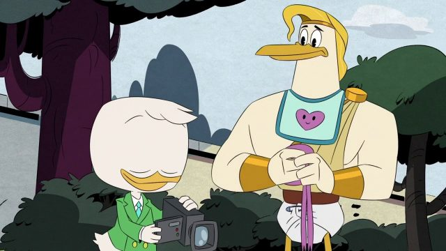

Kacze opowieści: sezon 2, odcinek 4 i 5 – recenzja
Najpierw bohaterowie odwiedzili tajemnicze brazylijskie miasto, a później odwiedziły ich greckie mity w postaci powracającego do serialu Ćwierkulesa. Jak tym razem wypadły dwa nowe epizody serialu?

Pierwszy z omawianych odcinków to pojawienie się Trzech Caballeros. Kaczy bohaterowie odwiedzają brazylijskie miasteczko skrywające wiele tajemnic. Odkrywać będą je wspólnie z Jose i Panchito, napotkanymi przyjaciółmi Donalda, którzy razem z nim tworzyli wspomniane wyżej trio. Czy ich wspólny występ na małym ekranie był równie dynamiczny i pełen wigoru jak w przypadku ich dawniejszych występów?
Może na pewno cieszyć fakt, że Kacze opowieści dalej są różnorodne pod względem przedstawianych historii i podobnie jak ostatnio w przypadku odcinka z Dziobasem, umiejętnie wprowadzani są bohaterowie, których znamy z innych seriali czy komiksów. Na wznowienie głównego wątku przyjdzie nam jeszcze poczekać, a na razie twórcy pozwalają nam na rozkoszowanie się pojedynczymi przygodami Kaczej Rodziny.
Czwarty odcinek to przede wszystkim motyw z selfie i robieniem zdjęć wszystkiemu, co wydaje się być atrakcyjne. W opozycji do tego stanęła Tasia, która wolała wszystko widzieć własnymi oczami, a nie za pomocą aparatu w telefonie. Tym razem także wątek edukacyjny wypada naprawdę dobrze. Nie wszystko tutaj jest oczywiste i dochodzi do sprawnej konkluzji bez przesadnego piętnowania nowych technologii. Są one przecież bardzo ważną częścią życia nie tylko widzów, ale też samych bohaterów. Zwraca się zatem celnie uwagę na inny aspekt i udaje się to scenarzystom naprawdę dobrze.

Zaskakująco spokojnie przebiega ponad połowa odcinka, gdzie w tym czasie twórcy raczą nas kilkoma zabawnymi scenami z udziałem Trzech Caballeros, siostrzeńców i Sknerusa. Po koncercie mniej lub bardziej udanych gagów, dopiero pod sam koniec zaczyna się klimatyczna i nawet powodująca gęsią skórkę akcja. Był to krótki czas, ale udaje się rozwinąć w międzyczasie wątek z Donaldem, co jest zawsze bardzo ciekawe i zasługuje na więcej uwagi scenarzystów.
Okazuje się jednak, że niestety odcinek piąty ma jedną wspólną cechę z epizodem czwartym. Chodzi o pojawiające się zagrożenia, które pozbawione są tożsamości. Dostajemy liczne i bez wyrazu twarze, co może nie tyle jest pójściem na łatwiznę, co nie kreuje po prostu ciekawych postaci, a zatem mniejsze jest też zaangażowanie widza. Brakuje kogoś pokroju Granita Forsanta, który poprzednim razem miał naprawdę udane pięć minut i wykorzystał je w pełni.
W piątym odcinku problematyczne jest także pojawienie się Ćwierkulesa, który zostaje współlokatorem Donalda. Zdaje się być tylko pretekstem do wplecenia w historię charakterystycznego dla tej postaci motywu i choć historia prowadzona jest ciekawie ze względu na pomysły Zyzia, to jednak jest to pewnego rodzaju rozczarowanie pod względem humoru i walki z nowym zagrożeniem.
Kiedy są odcinki słabsze pod względem humoru, zawsze zastanawiam się wtedy, gdzie jest Śmigacz. Brakowało go przez te dwa odcinki i chyba warto powrócić właśnie do niego, a nie korzystać z Ćwierkulesów i tym podobnych, kiedy najlepsze ma się tuż pod ręką. Choć Kacze opowieści dalej są świetne pod względem pojedynczych historii, to jednak tęskno do tych odcinków, które dotykały głównych wątków. Wiemy jednak, że to przyjdzie niebawem.